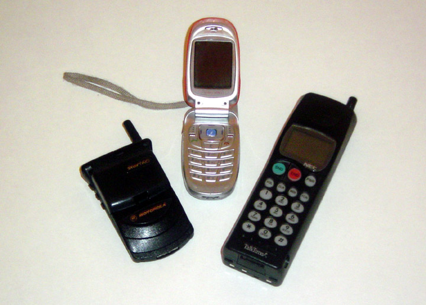
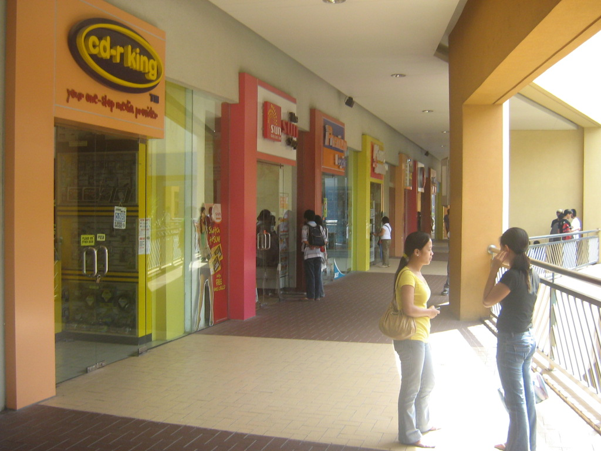

COST LENS01 / 03
A PHILIPPINE POP CULTURE MUSEUM · 2000–2010
TEXTS, TV &
TAMBAYAN.
See how cost, timing, and place shaped texting, TV, and meetups in the Philippines from 2000 to 2010. Pick a question and follow three sourced stops.
ADMIT ONE03 STOPS / 09 SOURCED EXHIBITSPH · 2000–2010


Browse all nine exhibits
Read the full collection by room. Each card links to its source.